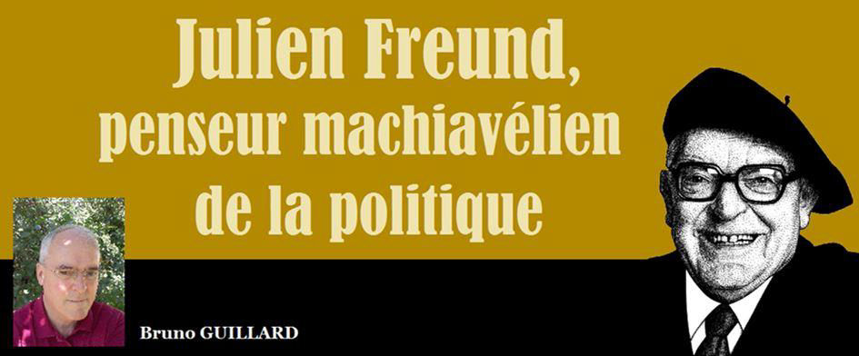
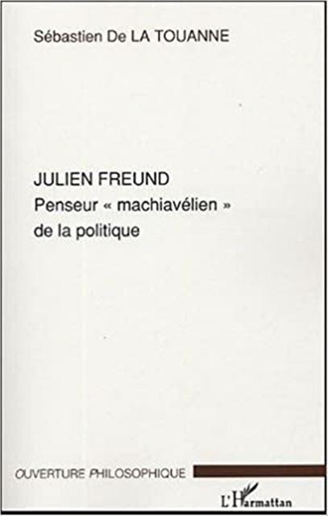
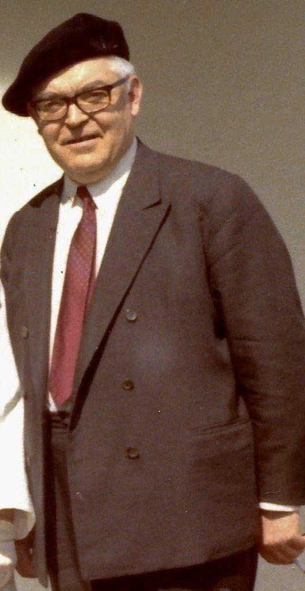
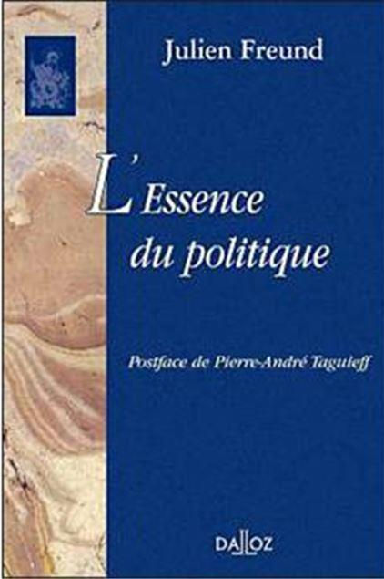
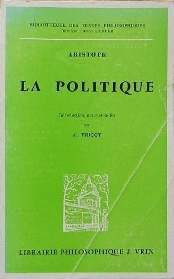
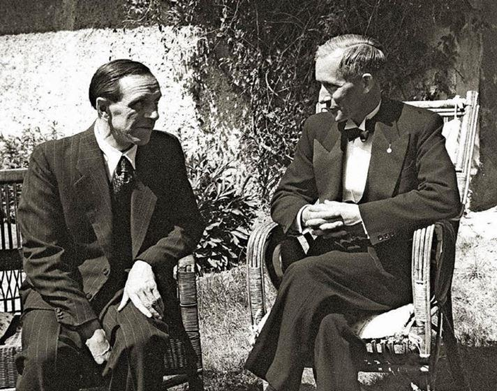
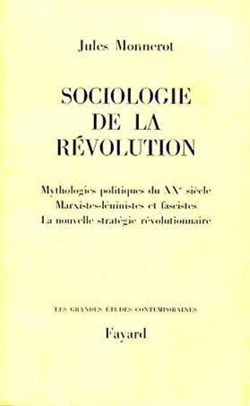
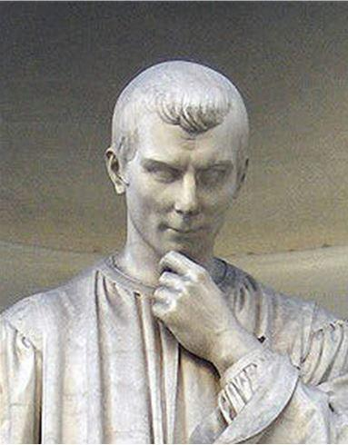
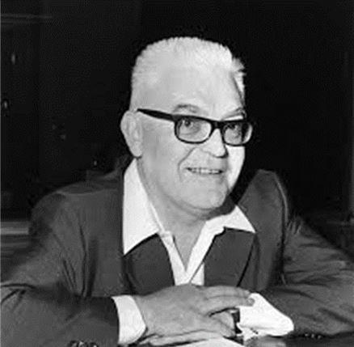

Julien Freund, penseur machiavélien de la politique
par Bruno GUILLARD

Sébastien Bigot de la Touanne est l’auteur d’un livre que nous ne pouvons que conseiller à tous ceux qui veulent découvrir la pensée du philosophe et sociologue Julien Freund (1921-1993). Ce livre est intitulé « Julien Freund. Penseur machiavélien de la politique » (Editions L’Harmattan).
Julien Freund est né le 9 janvier 1921 à Henridorff (Moselle) dans une famille modeste et nombreuse (8 enfants). Sa mère était une paysanne et son père un cheminot social-démocrate militant ; il appartint lui-même à cette famille politique dans sa jeunesse. Pris en otage par les Allemands en juillet 1940, il réussit à s’échapper et à passer en « zone libre ». Dès janvier 1941, il militait à Clermont-Ferrand, où l’Université de Strasbourg s’était réfugiée, au sein du mouvement « Libération » puis dans les groupes francs de « Combat » animés par Henri Frenay, tout en préparant sa licence de philosophie. Son frère Antoine, engagé de force dans l’armée allemande fut blessé lors de la bataille d’Orel et déserta. Sa famille participa très activement à la résistance mosellane (réseaux de passeurs).
Reçu à l’agrégation de philosophie en 1949, il enseigna dans divers lycées d’Alsace et de Moselle.
Puis, en 1964, il présenta sa thèse, qu’il avait préparée sous la direction de Raymond Aron. C’est cette thèse qui est à l’origine de l’ ‘’Essence du politique’’, publiée une première fois en 1965, une seconde fois en 1986 et enfin en 2003, augmentée d’une postface de Pierre-André Taguieff. Il fut ensuite professeur de sociologie à l’Université de Strasbourg où il fut le principal fondateur puis le directeur de l’Institut des sciences sociales au sein duquel il créa l’Institut de polémologie de Strasbourg.
Nommé en 1979 président de l’association internationale de philosophie politique, il prit peu de temps après une retraite anticipée parce qu’il désapprouvait l’évolution de l’enseignement universitaire. Retiré à Villé, d’où était originaire son épouse, qu’il avait connue dans la résistance, il se consacra alors à la rédaction de ses livres.
L’essence du politique
Pour notre philosophe, la société est une donnée naturelle parce que l’homme est un être social par nature. C’est ce que pensait déjà Aristote, qui a écrit « l’homme est un être politique, naturellement fait pour vivre en société », et c’est ce que pense le célèbre naturaliste contemporain Edward O. Wilson qui utilise le terme « eu-social » pour désigner la nature très sociale des humains. Freund rejette donc la philosophie moderne du « contrat social » selon laquelle la société serait une création artificielle qui permettrait tous les arrangements et tous les types d’organisation. La société, pour Freund, est une donnée naturelle et la politique est elle aussi une donnée naturelle qui est aussi vieille que l’humanité et qui l’a même, sans doute, précédée puisque les primatologues ont constaté l’existence de relations et d’activités politiques chez nos cousins les chimpanzés (lire à ce sujet les ouvrages du primatologue néerlandais Frans de Waal).
Selon qu’on considère que la société est une donnée naturelle ou au contraire qu’elle est une construction humaine, on ne peut que se faire une idée différente du politique. ‘’En effet, si l’homme est un être social par nature, il ne saurait créer une société totalement différente de celle qui existe, puisqu’il n’a pas créé cette dernière. Il peut seulement la réformer dans certaines limites. Mais il ne peut supprimer la politique ou l’organisation d’un pouvoir. Si, au contraire, on considère que la société a pour fondement un contrat, c’est en faire le résultat d’une convention que l’on peut, le cas échéant, modifier ou même abroger … Cette conception de la société comme donnée naturelle plutôt que comme construction artificielle est fondamentale.
Elle aura des répercussions sur la théorie politique et juridique de Freund que l’on retrouvera notamment dans sa critique des utopies et des idéologies’’ (page 118).
La politique est, selon Julien Freund, intrinsèque à la vie en société, ce qui le différencie des libéraux et des socialistes lesquels croient que la politique est une activité dépassée, un reste archaïque d’un passé révolu, dont il convient d’affranchir les humains en provoquant le dépérissement de l’État ou tout au moins en limitant le champ de son activité. A contrario des marxistes et des libéraux, il considère que la politique est une « essence », c'est-à-dire « un élément constitutif de la société et non une simple institution inventée par la méchanceté des hommes ou l’adresse de quelques-uns », et que « le politique, comme domination de l’homme sur l’homme, reste identique à lui-même à travers le temps » (‘’L’essence du politique’’, page 32). Pour lui, et à la différence de ce que pensent les marxistes et les libéraux, la dépolitisation est impossible.
Ceci dit, même s’il considère qu’il y a un réel primat du politique dans la mesure où la plupart des relations sociales sont partiellement déterminées par le politique, il n’en reste pas moins que ce dernier n’est pas tout et qu’il y a d’autres « essences » , c'est-à-dire d’autres activités humaines originaires , comme la religion, la morale, l’économie, l’art ou la science. ‘’ Il y a donc un au-delà de la politique, ne serait-ce que l’amour ou la vie personnelle de chaque individu au sein des autres activités ; activités qui peuvent entrer en conflit’’ (page 107). Selon lui, le but de la politique n’est pas d’être à son propre service mais d’être au service des autres aspirations humaines, ce qui en fait une activité particulièrement importante dont le rôle est global.
Julien Freund, tout comme Machiavel, se méfiait des idéologies et des utopies mais il reconnaissait qu’il n’y avait pas de politique sans idées et sans arrière-plan philosophique. S. de la Touanne écrit : ‘’Car la politique a besoin d’idées pour orienter l’action. Le politique est une essence, mais cette essence se manifeste concrètement en prenant corps chaque fois dans un régime particulier, donc dans une conception générale du monde. C’est dire que « toute politique est portée par une idée ». C’est la raison pour laquelle Freund reconnaît que tout ordre politique repose sur une base philosophique (conception de la société, des individus, de la morale, du droit….)’’ (page 138).
Dans son ouvrage incontournable, qui est intitulé ‘’L’essence du politique’’, Julien Freund expose ce qu’il appelle les « présupposés du politique » : ‘’ Selon la philosophie de Freund toute essence, toute activité, possède des présupposés, c'est-à-dire des conditions constitutives qui font que cette activité est ce qu’elle est et pas autre chose…….les recherches phénoménologiques de Freund l’ont mené à la conclusion qu’il y a trois présupposés du politique : la relation du commandement à l’obéissance, la relation du privé et du public, et la relation d’ami et d’ennemi. Cet ordre n’est pas indifférent. La relation de commandement et de l’obéissance constitue le présupposé de base du politique en général.
C’est la relation hiérarchique entre gouvernants et gouvernés. La relation du privé et du public, quant à elle, commande plutôt la politique intérieure et celle de l’ami et de l’ennemi la politique extérieure… Ces trois présupposés jouent un rôle précis en politique : le couple du commandement et de l’obéissance conditionne la formation de l’unité politique, celui du privé et du public son organisation et celui de l’ami et de l’ennemi sa conservation ou, le cas échéant, sa disparition’’ (page 127).
Le commandement et l’obéissance
La notion de commandement est perçue très négativement par les progressistes (libéraux, libertariens, libertaires, socialistes) qui rêvent d’une société horizontale dans laquelle les relations hiérarchiques auraient disparu (après une phase de « régénération » ou de « rééducation » coercitive, selon certains d’entre eux). Freund ne s’inscrit pas, bien évidemment, dans une telle perspective ; son point de vue est, comme toujours, mesuré.
‘’Pour Freund, aucune société ne peut être absolument et purement hiérarchique ni absolument et purement égalitaire. Il constate, en particulier, qu’il n’a jamais existé de sociétés historiques entièrement égalitaires. S’il y a eu des tentatives, de la part de communautés de taille réduite, de se construire sur la stricte égalité, toutes ont échoué assez rapidement, soit en cessant d’exister, soit en réintroduisant des formes plus ou moins manifestes de structures hiérarchiques’’ (page 130).
‘’Car, dans une société, tout peut devenir prétexte à la constitution de classes sociales ou de castes qui assoient leur domination sur l’hérédité, la richesse, le charisme ou même sur l’élection ……Freund souligne que la démocratisation de la société n’a rien changé à cet état de fait, la voie démocratique étant seulement devenue un moyen de s’imposer comme minorité dirigeante’’ (page 131). Et l’auteur ajoute : ‘’Le commandement est sans doute le concept le plus révélateur de la conception machiavélienne et décisionniste de la politique freundienne. Pris au sens strict, le commandement consiste conceptuellement avant tout en une volonté discrétionnaire, souveraine et monocratique. C’est une notion difficile à appréhender car elle est voilée par celle de pouvoir qui est très proche. C’est pourquoi la distinction qu’apporte Freund entre ces deux notions est intéressante. Pour lui, le pouvoir c’est « le commandement structuré socialement ». C’est une réalité sociologique qui suppose au préalable l’existence du commandement. Contrairement au pouvoir, qui s’incarne dans les institutions, le commandement apparaît comme quelque chose de plus brut, plus originel et plus mystérieux. Il est ce qui existe avant que les Etats soient fortement hiérarchisés, légalisés, administrés et démocratisés ’’ (page 132). Julien Freund atteint là le socle comportemental inné de l’espèce humaine. Les groupes humains, comme ceux des chimpanzés, sont dominés par des individus qui ont des qualités leur permettant de s’imposer aux autres membres du groupe. Claude Lévi-Strauss a constaté qu’au sein des peuples « premiers » qu’il a eu l’occasion d’observer, des individus charismatiques prennent en charge cette fonction de commandement dont ils ne retirent que très peu d’avantages matériels et qui, par contre, leur impose beaucoup de contraintes. Le seul avantage concret qu’ils en tirent est un réel succès auprès des femmes et, par conséquent, une descendance nombreuse.
Cependant, Freund n’est pas un décisionniste « pur » ; pour lui, le commandement implique bien évidemment l’obéissance, sans laquelle rien n’est possible, mais il considère que le commandement n’est pas une fin en soi, qu’il vise à la réalisation d’une œuvre commune et qu’il implique aussi le consentement à l’autorité ce qui caractérise la légitimité. ‘’Selon lui, la légitimité « consiste dans le consentement durable et quasi unanime que les membres et les couches sociales accordent à un type de hiérarchie et à une classe dirigeante en vue de régler les problèmes intérieurs par d’autres voies que celles de la violence et de la peur qui s’ensuit’’ (page 139).
Le décisionnisme de Julien Freund se distingue de celui de Carl Schmitt ; à la différence de ce dernier, il pensait que le souverain se doit de respecter des règles, des coutumes, des principes, y compris en cas d’urgence, sous peine de ruiner sa légitimité et de provoquer, de ce fait, la désobéissance justifiée des citoyens.
Le privé et le public
Le second présupposé du politique est la distinction privé-public. Julien Freund pensait que cette distinction est présente dans toutes les sociétés depuis la nuit des temps. Ainsi, dans ‘’La politique’’, Aristote distingue le bien commun et les biens particuliers, l’homme privé et le citoyen. De même, ‘’Suivant les époques, les idées régnantes ou les nécessités sociales, chacune des sphères, privé ou public, peut avoir une extension plus ou moins large. Par exemple, le socialisme tend à étendre le public et le libéralisme donne la prépondérance au privé’’ (page 143).
On peut ajouter que le libertarianisme, qui est une forme extrême du libéralisme (lequel a, lui aussi, ses extrémistes), entend réduire la sphère publique à rien et étendre la sphère privée à tout.
A contrario, les collectivismes, communistes, fasciste et nazi, entendaient, et entendent encore, englober toute l’existence des hommes dans une « totalité » ; pour eux, l’individu n’est rien et ne doit pas avoir d’autre existence que collective (dans la classe prolétarienne pour les uns et dans la collectivité raciale ou stato-nationale pour les autres).
‘’Contrairement à Tönnies, Freund n’idéalise ni le privé, ni le public. Sa démarche machiavélienne lui interdit de porter des considérations morales sur l’un ou l’autre. Il ne tombe donc pas dans le travers de ceux qui font du privé le refuge de l’authentique, de la spontanéité, de la vie réelle, ou qui y voient le royaume de la liberté, de la créativité de l’homme……Il observe, par ailleurs, que les grecs et les romains ne se faisaient pas la même idée du privé. Pour eux, il était de l’ordre du nécessaire et du naturel, soumis aux lois biologiques et réglementé par les traditions religieuses. Par contre, la vie publique passait pour le lieu de la liberté, des compromis et des conventions’’ (page 147).
‘’Le privé est lié à certaines nécessités naturelles et vitales (l’amour, la famille, l’éducation, la religion)…..Il s’oppose au public dans la mesure où le public est l’affirmation d’une unité : il est la sphère dans laquelle s’exerce l’autorité publique. Le public exprime positivement une idée politique, celle d’un ordre commun. A l’opposé le privé est en quelque sorte négativement une idée politique, puisqu’il détermine une sphère propre qui s’oppose à la politisation totale de la société. L’étymologie est assez éclairante à cet égard : privé dérive de « privare » qui signifie priver, séparer, tandis que public dérive de « populus », qui signifie peuple’’ ‘page 147).
‘’En outre, tout comme Aristote, Freund estime que l’individu n’est véritablement lui-même qu’en participant à une vie politique qui donne sens à son existence individuelle’’ (page 148). Il considérait que les doctrines qui veulent éradiquer le public (libertarianisme, anarcho-capitalisme mais aussi marxisme puisque ce dernier a pour objectif la dissolution de l’Etat) ne peuvent que conduire à de lourds échecs.
‘’La distinction privé-public est emblématique de la notion d’ « équilibre conflictuel » qui nous semble être au cœur de la philosophie de Freund et qu’il a sans doute en partie puisé chez Pareto…..Le privé est aussi essentiel que le public. Mais surtout, ce conflit est indispensable à la survie de la société, il la stimule, lui évite de sombrer dans un immobilisme stérile et favorise la créativité’’ (page 149). Cette position est très proche de celle de Machiavel pour lequel le conflit est ce qui permet aux communautés humaines de s’adapter et de créer des institutions permettant de satisfaire les aspirations d’une majorité et de ce fait de maintenir la cohésion des sociétés. Cette vision conflictuelle de l’existence communautaire est à l’opposé de celle des libéraux qui rêvent d’une société définitivement « apaisée »(dépolitisée en fait), mais aussi de celle de ces nationalistes conservateurs qui ne supportent aucune division, même momentanée, au sein de la nation et qui rêvent de réaliser une unanimité parfaite de la dite nation.
Julien Freund considérait qu’ « il n’y a de liberté politique que dans un système qui respecte la distinction du privé et du public » (‘’L’essence du politique’’) ; le totalitarisme résultait, selon lui, de la volonté de mettre fin à la distinction entre ces deux sphères. Pour lui, il y avait deux dangers extrêmes : la guerre civile et le totalitarisme qui est la politisation totale de la société, auxquels il a été confronté pendant la guerre (nazisme qu’il a combattu les armes à la main ; guerre civile de 1944) et, plus tard, au cours de sa carrière universitaire (communisme d’inspiration marxiste auquel il s’est opposé par les idées).
L’ami et l’ennemi
Le troisième présupposé est celui de l’ami et de l’ennemi.
Freund répondit un jour à Jean Hyppolite, qui avait refusé de diriger son travail doctoral parce qu’il n’adhérait pas à l’idée selon laquelle il n’y a de politique que là où il y a un ennemi, ce qui lui semblait incompatible avec son pacifisme, ‘’C’est l’ennemi qui vous désigne’’ et ce, quand bien même, vous refusez d’avoir ou de désigner un ennemi. Freund pensait que l’existence future d’un ordre apolitique, dans lequel il n’y aurait plus d’ennemis, relève de la foi. ‘’Mais d’un point de vue phénoménologique, si l’on s’en tient à l’expérience générale et à l’histoire, force est de constater « qu’il n’y a de politique que là où il y a ennemi », ce qui signifie que « la violence est au cœur de la politique. Il ne s’agit pas, en l’occurrence, de justifier la violence, mais seulement de reconnaître sa présence et de comprendre pourquoi le politique ne peut éviter de reconnaître l’existence de l’ennemi »’’ (page 159).
On rabat très souvent les positions de Freund sur celle du juriste et philosophe allemand Carl Schmitt, qui était catholique comme lui, mais qui, à la différence de Freund, faisait de la relation ami-ennemi le seul présupposé du politique. ‘’Il est vrai que Freund est, comme Schmitt, un théoricien de l’ennemi. Pour lui, effectivement, « il n’y a politique que là où il y a un ennemi ». Toutefois, cette affirmation très controversée, si elle s’inspire de la pensée de Schmitt, en diffère, notamment, en ce que chez Freund, la distinction ami-ennemi n’est pas le critère, mais seulement un des trois présupposés du politique, et qu’en outre ce n’est pas – comme nous l’avons vu précédemment – le plus important’’ (page 156). Pour Freund, la violence n’est ni une fin en soi ni le but du politique, bien sûr, mais le seul recours possible quand la situation est sans issue.

Carl Schmitt &
Ernst Jünger
De ce point de vue aussi Freund est un héritier de Machiavel qui considérait que le conflit était inévitable tant entre les entités politiques qu’en leur sein. Machiavel considérait même que les conflits avaient des effets bénéfiques parce qu’ils permettent à la société de s’adapter sous réserve bien sûr qu’ils ne dégénèrent pas en guerre civile ; mais un des rôles essentiels du politique ne consiste-t-il pas à éviter de telles situations ?
L’influence machiavélienne qui marque l’œuvre de Julien Freund est, d’une façon générale et parfois un peu contradictoire (mais ne sommes-nous pas des êtres intrinsèquement contradictoires, partagés entre le besoin de concorde et l’ambition personnelle qui la met en péril ?), tempérée par l’influence aristotélicienne. Comme Aristote, il considérait que la fin du politique est la concorde et la paix.
La souveraineté : un attribut du commandement
Julien Freund accorde une grande importance aux concepts politiques les plus controversés tels que le commandement, la souveraineté, la décision et la situation exceptionnelle. Pour lui, la souveraineté est de nature politique et est inséparable des notions de commandement (qui est « une volonté arbitraire de décision »), de puissance et de force. La souveraineté est, selon lui, un concept extra-juridique et il reproche à Bodin d’avoir introduit une ambiguïté en tentant d’en faire un concept juridique.
Julien Freund montre que la souveraineté n’est pas liée à l’Etat moderne et qu’elle existe depuis qu’il y a des sociétés humaines. Cette notion était déjà connue des Grecs et des Romains. ‘’C’est pourquoi, il considère qu’elle est avant tout un phénomène de puissance et de force. Elle est un révélateur de l’arbitraire qui sommeille dans le commandement. Pour Freund, en effet, le commandement dispose toujours d’un pouvoir discrétionnaire. En dépit de l’encadrement légal du pouvoir, de la rationalisation de l’activité politique, il demeurera toujours des domaines – notamment dans le cas des situations exceptionnelles non prévues par la loi et les institutions – dans lesquels le commandement retrouvera une compétence immédiate et quasi exclusive’’ (page 210). La souveraineté serait donc un concept strictement politique qui échapperait au droit lequel essaie d’attribuer la souveraineté au peuple ou à la nation ; Freund a dénoncé clairement ces fictions. ‘’Freund pensait aussi qu’au sein du politique la souveraineté représente la puissance et que cette puissance est entre les mains du commandement. C’est cette importance de la puissance qui donne un tour décisionniste à sa conception de la souveraineté’’ (page 213).
‘’Le décisionnisme de Freund doit cependant être largement relativisé, car chez lui le commandement, loin d’être purement discrétionnaire, doit plonger ses racines dans la société qu’il dirige et bénéficier du soutien de la population. En outre, il n’est pas une fin en soi, mais il est au service de la collectivité’’ (page 207). Son décisionnisme ne permet donc pas de justifier une tyrannie ou un despotisme même « éclairé ». Par contre, on peut penser qu’il est en phase avec l’article 16 de notre constitution qui prévoit la « dictature momentanée » (De Gaulle) en cas de situation exceptionnelle. Cet article 16 est tout à fait similaire à l’institution importante que fut la dictature à Rome, une magistrature qui était votée pour six mois ; par contre, il n’a rien à voir avec la dictature permanente des Bonaparte. D’ailleurs, Charles de Gaulle n’était pas un épigone des deux empereurs auxquels il ne s’est jamais référé comme l’a noté très justement Frédéric Rouvillois.
Si la souveraineté n’est pas un attribut du peuple ou de la nation mais celui du commandement, il nous faut abandonner, dans un souci de clarification, l’utilisation des concepts de « souveraineté populaire » et de « souveraineté nationale » et les remplacer peut-être par ceux d’ « autonomie populaire » (ce qui signifie que le peuple choisit les lois auxquelles il accepte de se soumettre) et d’ « indépendance nationale ». Le terme « autonomie » présente l’avantage, à la différence de la souveraineté, de ne pas renvoyer à la notion d’unanimité qui fut une obsession maladive des acteurs de la Révolution française influencés par Rousseau et son idée aussi « métaphysique » (François Huguenin) que lourde de menaces totalitaires qu’est la mystérieuse « volonté générale » laquelle est intimement liée à l’idée de la souveraineté telle qu’elle était pensée par les acteurs de la Révolution française.
Le réalisme contre l’idéalisme
Machiavel considérait que les philosophes étaient déraisonnables lorsqu’ils imaginaient des sociétés idéales sans tenir compte de la nature humaine telle qu’on peut la constater en observant nos contemporains ou en étudiant l’histoire. C’est la raison pour laquelle il refusait d’être considéré comme un des leurs. De même, Julien Freund , bien qu’il pensait que la tendance à créer des utopies était profondément naturelle, nous invitait à nous en méfier. A ce sujet, Sébastien de la Touanne écrit : ‘’ L’idée d’utopie en politique s’oppose fondamentalement à la conception philosophique et politique de Freund. L’utopie se détourne en effet de l’expérience humaine au nom de spéculations imaginaires et fictives sur l’avenir et pense pouvoir transformer radicalement l’homme par les institutions. Pure idée abstraite détachée de la réalité, elle est alors exposée aux divagations de la démesure, au despotisme et à la tyrannie. Au contraire, la politique telle que l’entend Freund ne vise pas à édifier une société totalement nouvelle dans l’espoir de métamorphoser l’homme dans son être. Ancrée dans l’expérience de la réalité, sa politique a pour but de tempérer les imperfections humaines, de trouver les accommodements les plus convenables et appropriés à la cohabitation des hommes, compte tenu des caprices et de l’indomptabilité de la nature humaine ‘’ (page 270).
Comme l’a écrit Jules Monnerot dans ‘’Sociologie de la révolution’’ : ‘’Il n’existe pas dans l’expérience humaine de passage, de continuité entre l’idée et le fait’’. ‘’ L’idée d’égalité des hommes ne produit pas l’égalité des hommes. De même, l’idée de « dictature du prolétariat » comme transition vers la « société sans classes » ne produit pas une dictature du prolétariat que suivrait une « société sans classes »’’ (page 283). On pourrait ajouter que l’idée de « race pure » ne change rien au fait qu’une telle race n’a jamais existé. Or, tous les utopistes semblent penser que de l’idée au fait il n’y a qu’un pas, qu’il suffit d’émettre une théorie pour qu’elle se traduise dans la réalité. Là se situe l’origine de beaucoup de malheurs, de souffrances et de crimes.
Julien Freund, philosophe conservateur
Julien Freund était indiscutablement un conservateur en ce sens qu’il considérait que la nature humaine est invariable. En cela aussi il s’inscrivait dans la tradition machiavélienne et en opposition avec les idéologies progressistes, à commencer par l’idéologie de la Révolution française qui est pénétrée de l’idée selon laquelle il n’y a pas de nature humaine. Selon cette idéologie, toutes les caractéristiques humaines sont acquises, ce que les travaux de très nombreux spécialistes contemporains démentent. Le psychologue Steven Pinker, un exemple parmi beaucoup d’autres psychologues anglo-saxons, explique que les caractéristiques psychologiques humaines sont héritables pour l’essentiel (50 % en moyenne), aléatoires pour une autre part (40 %) et acquises pour une petite part seulement (10%). Les révolutionnaires français, Condorcet, Robespierre, Le Peletier….. étaient tous pénétrés de l’idée de la « table rase » et d’une idée complémentaire : celle de la « régénération » par l’éducation. Cette idée avait été exprimée avant la Révolution par Helvétius , un philosophe des Lumières (!) qui pensait que «tout, jusqu’à l’humanité, est dans l’homme une acquisition ». C’est une idée radicalement égalitariste et constructiviste qui a enflammé l’imagination des rêveurs progressistes jusqu’à nos jours et qui continue à générer beaucoup d’idées folles (théorie du genre…).
À contrario de cette croyance dangereuse, Machiavel a écrit : ‘’ ‘’Je crois, moi, que tout comme la nature a fait aux hommes des visages différents, de même elle les a fait d’entendements (ingegno) différents et de fantaisies (fantasia) différentes. De ceci naît que chacun se gouverne selon son entendement et sa fantaisie’’ (‘’Caprices à Soderini’’).
Considérant que la nature humaine est une donnée (qu’il ne serait possible de changer qu’en modifiant le génome des humains), Julien Freund estime qu’il n’est pas possible d’ignorer deux comportements essentiels : le comportement hiérarchique et le comportement agressif.
Les éthologues ont observé ces deux comportements chez nos cousins les plus proches, les chimpanzés en particulier, et les philosophes et les historiens ont pu constater leur existence depuis la nuit des temps. Tous les projets politiques ayant eu pour objectif de les éradiquer ont échoué et il est piquant de constater que les régimes qui prétendaient « désaliéner » les humains en les débarrassant (par l’éducation) de ces comportements ont utilisé eux-mêmes la violence (et quelle violence !) et ont construit des sociétés très hiérarchisées !
Ceci dit, admettre cette réalité n’implique pas de laisser le champ libre à la pleine expression de ces tendances comportementales. Bien au contraire, notre philosophe pense qu’il est indispensable de créer des institutions et des règles visant à les encadrer de façon à limiter leurs effets. Mais il reconnaît aussi que quoi qu’on fasse, elles ne disparaîtront pas pour autant ; « nous sommes donc condamnés à faire avec ». C’est un des rôles de l’activité politique ‘’de régler et de modérer une violence qui préexiste et qui a sa source dans la complexion de notre nature’’ (Julien Freund – Utopie et violence – page 143).
Julien Freund était aussi un conservateur en ce qu’il récusait l’individualisme moderne, d’origine libérale, et qu’il accordait une grande importance à la communauté d’appartenance, à la patrie : « On a beau ironiser sur le concept de patrie et concevoir l’humanité sur le mode anarchique et abstrait comme composée uniquement d’individus isolés aspirant à une seule liberté personnelle, il n’empêche que la patrie est une réalité sociale concrète, introduisant l’homogénéité et le sens de la collaboration entre les hommes.
Elle est même une des sources essentielles du dynamisme collectif, de la stabilité et de la continuité d’une unité politique dans le temps. Sans elle, il n’y a ni puissance ni grandeur ni gloire, mais non plus de solidarité entre ceux qui vivent sur un même territoire.
[…] Dans la mesure où la patrie cesse d’être une réalité vivante, la société se délabre non pas comme le croient les uns au profit de la liberté de l’individu ni non plus comme le croient d’autres à celui de l’humanité ; une collectivité politique qui n’est plus une patrie pour ses membres cesse d’être défendue pour tomber plus ou moins rapidement sous la dépendance d’une autre unité politique. Là où il n’y a pas de patrie, les mercenaires ou l’étranger deviennent les maîtres. Sans doute devons-nous notre patrie au hasard de la naissance, mais il s’agit d’un hasard qui nous délivre d’autres » (‘’Qu’est-ce que la politique ?’’). En cela aussi, il était très proche du Florentin qui accordait plus d’importance à sa patrie qu’à lui-même.
Philosophie et politique
Comme Machiavel, Julien Freund se méfiait beaucoup des idéologies, ces systèmes intellectuels qui imaginent les humains et leurs sociétés tels qu’ils n’ont jamais été. Le Florentin avait pour règle de s’en tenir toujours à la verita effetuale della cosa, à ce qui est observable, et non pas à l’idée qu’on peut s’en faire en laissant libre cours à son imagination. Ainsi dans Le Prince (chapitre XV), il écrit : ‘’Mais mon intention étant d’écrire chose utile à qui l’entend, il m’a paru plus pertinent de me conformer à la vérité effective de la chose qu’aux imaginations qu’on s’en fait. Et beaucoup se sont imaginé des républiques et monarchies qui n’ont jamais été vues ni connues pour vraies’’.
Mais Julien Freund nuance le point de vue machiavélien ; il considérait, à juste titre, que la politique a besoin d’idées pour orienter l’action et que ‘’toute politique est portée par une idée’’ (‘’L’essence du politique’’). ‘’C’est la raison pour laquelle Freund reconnaît que tout ordre politique repose sur une base philosophique (conception de la société, des individus, de la morale, du droit…) plus ou moins explicite’’ (page 138).
Ceci dit, Julien Freund soulignait les aspects négatifs des idéologies dont il pensait qu’elles étaient des procédés de manipulation et de contrôle de l’opinion. L’action politique ne peut donc faire l’économie des idées philosophiques mais doit se garder des systèmes idéologiques même s’il reconnaît qu’elles sont des moteurs de la politique dans la mesure où elles suscitent l’espoir. On peut être plus réservé que lui à leur sujet car les idéologies ont montré, depuis 1789, qu’elles avaient une capacité à entraîner les humains sur des sentiers périlleux voire très dangereux. Les idéologies présentent plusieurs tares fondamentales notamment la déconnection avec le réel, la tendance à développer des idées jusqu’au bout de leur logique propre (or, toute idée, même la meilleure, doit avoir des limites ; les idées de liberté et d’égalité elles-mêmes peuvent devenir folles si on les déroule jusqu’à leurs ultimes conséquences possibles), enfin, elles sont souvent construites de manière parfaitement logiques, ce qui les rend souvent séduisantes, bien qu’elles soient sans rapport avec la réalité observable.
Il semble plus raisonnable et plus conforme à l’esprit de la philosophie « mésocratique » d’admettre l’importance essentielle des idées dans l’action politique tout en refusant les systèmes idéologiques dont nous avons tant pâti depuis 1789 et tout en ayant toujours présent à l’esprit deux impératifs : celui des limites et celui du réalisme.
Pour un régime mésocratique
L’idée de régénération de l’humanité, telle qu’elle a été pensée par les acteurs de la Révolution française et depuis par tous les admirateurs de Robespierre, de Lénine, de Staline….et des Khmers rouges, mais aussi, dans un autre genre, par les fascistes et les nazis, est totalement étrangère à Julien Freund. Pour lui, la politique ne vise pas à la création d’un homme nouveau ou à une régénération de l’humanité mais à créer les conditions permettant aux citoyens de se livrer à leurs activités, selon leurs préférences, dans la concorde et la sécurité. Le régime qui permet le mieux d’atteindre cet objectif, selon lui, est le régime qu’il appelle « mésocratie ».
Le régime « mésocratique », auquel va sa préférence, n’est pas le régime du « juste milieu » mais celui de la mesure, ce qui traduit parfaitement toute l’œuvre du philosophe mosellan. Pour ce dernier, ‘’la mésocratie reconnaît que la liberté et la contrainte sont également indispensables à la vie en société. C’est pourquoi elle accepte que le pouvoir s’impose à lui-même des limites. Il est « le système de l’équilibre ou de la balance des pouvoirs, c'est-à-dire qu’il reconnaît la légitimité des pouvoirs intermédiaires et des contre-pouvoirs au sens où Montesquieu disait que le pouvoir arrête le pouvoir ». Ce qui est essentiel pour Freund, c’est que le pouvoir mésocratique reconnaisse des pouvoirs intermédiaires et des contre-pouvoirs, car cela montre qu’il ne se considère pas comme l’unique détenteur de la vérité.’’ (page 314).
Freund pensait que dans toutes les communautés humaines il y avait des gouvernants et des gouvernés mais il pensait aussi qu’il n’y avait pas de légitimité du commandement en l’absence d’un accord des gouvernés. De plus, il lui importait que les gouvernés soient associés à la vie politique « comme citoyens qui participent à la vie publique et qui ont leur mot à dire dans l’orientation de la collectivité » (« Le gouvernement représentatif », page 7).
Sébastien de la Touanne écrit que le terme « libéral » est inadapté pour qualifier ce que Freund appelle « mésocratie » et il ajoute ‘’Mais on peut aussi penser que s’il rejetait le terme même de libéralisme, c’est parce qu’il se trouvait en porte à faux avec un certain nombre des principes essentiels de cette doctrine. Contrairement à la plupart des libéraux, nous avons vu, par exemple, que Freund est très sceptique à l’égard de la théorie moderne du progrès, qu’il se méfie de l’individualisme moderne, du subjectivisme et de l’abstraction des droits de l’homme, qu’il ne fait pas confiance au marché ou à l’économie pour réguler les relations sociales’’ (page 317). Si l’on ajoute à cela sa critique de la théorie du contrat social, sa conception « réaliste » des relations internationales reposant sur la distinction ami/ennemi, sa justification de la souveraineté (que les libéraux rejettent depuis toujours), sa défense de la puissance et du commandement, l’idée qu’il se fait de la politique comme recherche et réalisation d’un Bien Commun, contrairement aux libéraux qui privilégient les biens privés, et son refus de la suprématie de l’économie sur le politique (comme celui de toute « essence » sur les autres)….. , alors il semble évident que la pensée de Julien Freund ne relève pas du libéralisme mais plutôt d’un républicanisme conservateur et mésocratique.
La pensée « machiavélienne modérée » de Freund est une pensée de l’équilibre. Equilibre entre le commandement et l’obéissance, équilibre entre la sphère privée et la sphère publique, équilibre entre les moyens et les fins, équilibre entre les passions et la raison, équilibre, enfin, entre la morale et la politique (ce dernier point permet de le distinguer des partisans de la « realpolitik » pure qui refusent toute prise en compte de la morale dans le domaine de la politique). Sébastien de la Touanne écrit : ‘’Pour un machiavélien comme Freund, il ne saurait y avoir d’action morale pour soi qui ne serait que morale, indépendante de toute motivation et de tout objectif. La conception kantienne et idéaliste de la morale est insuffisante. Il ne faudrait pas cependant opposer à une vision moralisante de la politique une vision fondée uniquement sur la puissance et l’efficacité de la « Realpolitik ». Entre ces deux excès, il y a place pour une juste mesure. C’est cette juste mesure qu’incarne, selon nous, la notion de machiavélisme modéré’’ (page 202).
Machiavel, comme tout républicain digne de ce nom, était favorable à une limitation des dominations mais il pensait que la disparition de toutes les dominations n’était ni possible ni même souhaitable et que la poursuite d’un tel objectif ne pouvait aboutir qu’à des catastrophes. Julien Freund, comme le Florentin, avait suffisamment bien compris ce qu’était la nature humaine pour rêver de sociétés exemptes de commandement, d’autorité et de hiérarchie. Notre société « avancée » qui meurt de l’affaissement dramatique de l’autorité, affaissement accepté ou encouragé par tous les gouvernements depuis 1969 et par tous les réseaux progressistes culturels, éducatifs et syndicaux (des libéraux à l’extrême-gauche), est une parfaite illustration de la justesse de la théorie freundienne. Les Français l’ont d’ailleurs intuitivement bien compris puisque 88% d’entre eux souhaitent une restauration de l’autorité (septembre 2020).
B.G.
BIBLIOGRAPHIE DE JULIEN FREUND (NON EXHAUSTIVE)
L’essence du politique – Dalloz – 2003
Qu’est-ce que la politique – Seuil - 1978
Sociologie de Max Weber – PUF – 1983
Politique et impolitique – Sirey – 1987
La décadence – Sirey - 1984
La fin de la Renaissance – PUF - 1980
Sociologie du conflit – PUF - 1983
Utopie et violence – Marcel Rivière Ed. – 1978
Philosophie philosophique – La découverte - 1990
L’essence de l’économique – Presses Universitaires de Strasbourg – 1993
Pareto - La théorie de l’équilibre – Seghers - 1974
Retrouvez les articles et analyses de Bruno GUILLARD sur www.inforepublica.fr
Partager cette page